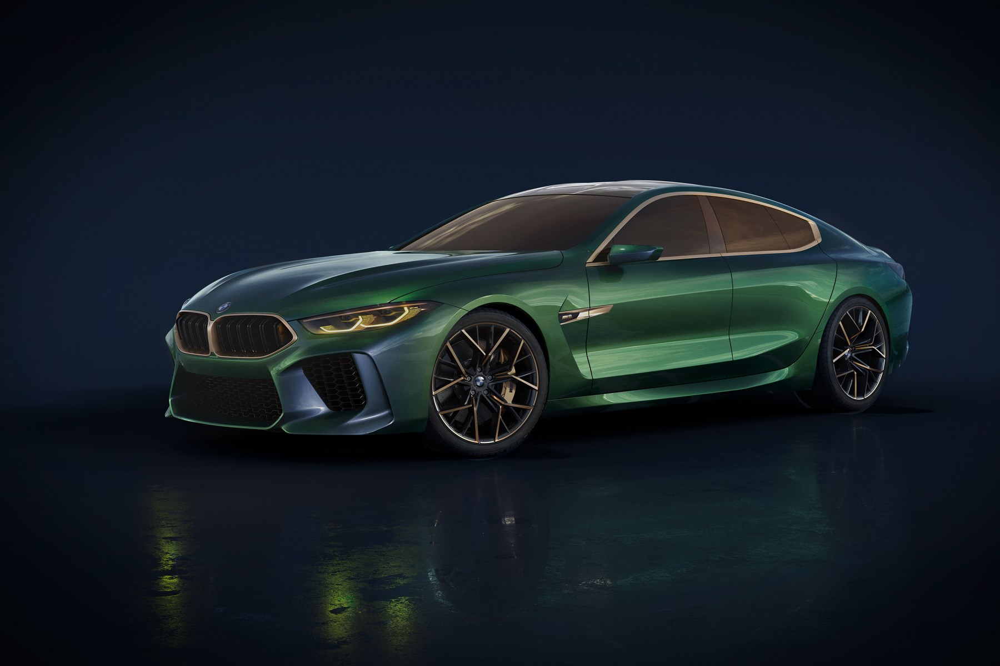
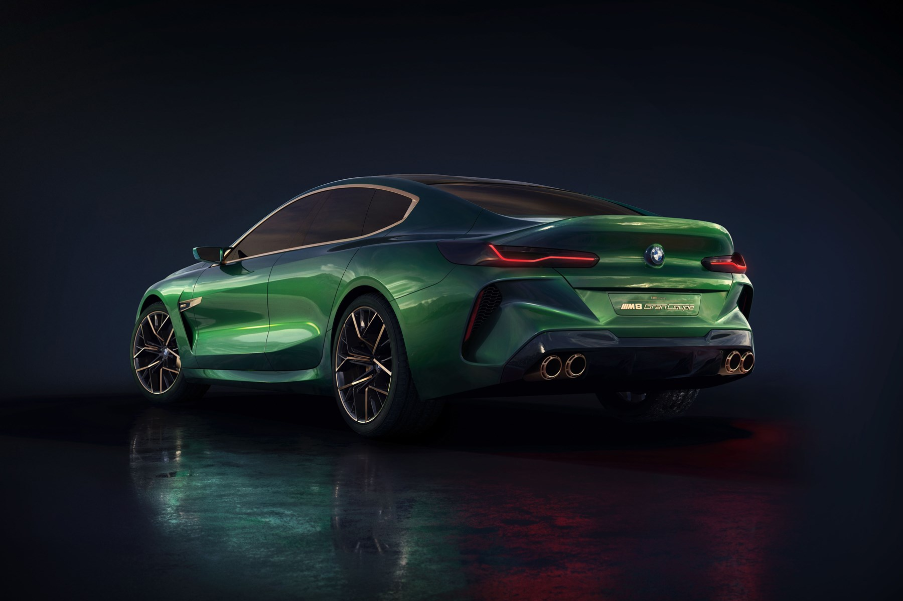
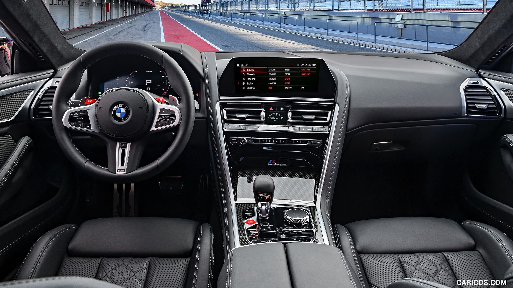
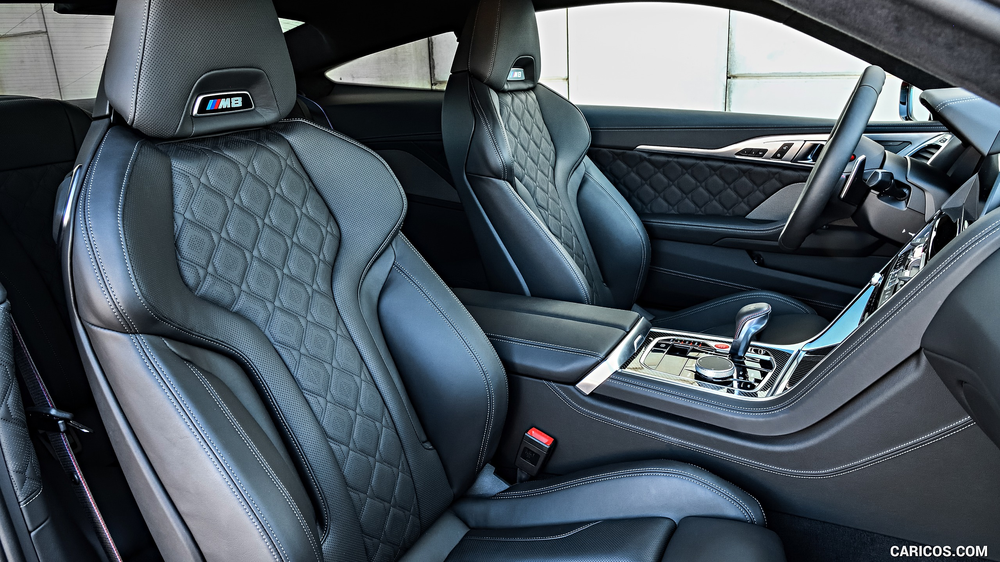

Overview
The 2024 BMW M8 combines some baffling specs. It's as heavy as a Ford F-150, it's quicker to 60 mph than a Ferrari F8 Tributo, it rips through the quarter-mile in the same time as a Chevrolet Corvette Z06, and it does all of this with a back seat and an implacable luxury poise those others don't possess. Admittedly, the back seat isn't practical for full-grown humans. Even so, the M8's soothing cabin is one of the best places to experience what bodacious power delivery and all-wheel-drive traction can achieve together. Available as either a coupe or convertible (the four-door M8 Gran Coupe sedan is reviewed separately), the M8 represents the kind of comprehensively capable luxury GT we're more used to seeing with an Aston Martin or Bentley badge and a far heftier price.
What's New for 2024?
There are no changes for the 2024 model year, so the M8 carries over to the new year just as fabulous as it left 2023.
Pricing and Which One to Buy
Competition Coupe $140,795
M8 Convertible $150,795
We'd recommend the convertible; you won't
lose
any
time at the track unless you hold a gold-level FIA racing license, and you can put the top down on the
way
to
and from the circuit. Both body styles come standard with all manner of luxuries, so we'd select options
that
help unlock the M8's full performance potential. These include the M Carbon ceramic brakes, which BMW
says
reduce weight and are built to better withstand track abuse. We'd add the M Driver's package that
marshals
the
car's formidable power at the limit and includes one day of performance driving school. Even better, the
package
increases the top speed from 155 to 189 mph. We'd also get the Driving Assistance Professional Package
and
the
neck warmers for more comfortable driving at everyday speeds and in all types of weather.
Engine, Transmission, and Performance
The M8's long nose hides a twin-turbocharged 4.4-liter V-8 that makes 617 horsepower and 553 pound-feet of torque. It sends that power through an excellent eight-speed automatic and on to a rear-biased all-wheel-drive system that can disengage power to the front axle. After time spent in both the coupe and convertible, our only disappointment about the powertrain is the limp exhaust note. When we strapped our test gear to the 4251-pound M8 Competition coupe, we were blown away by its ridiculously quick acceleration, reaching 60 mph in just 2.5 seconds. Such explosive hustle deserves a hot-blooded song from the quad exhaust pipes. Small weaknesses emerge when pushing the M8, like minimal feedback through the thick steering wheel and a somewhat distant brake pedal feel. That said, those faults don't overshadow the enormous grip, compliant ride, and astonishing nimbleness of a two-door weighing more than two tons.
BMW M8 Competition 823HP MANHART 0-311km/h ACCELERATION & TOP SPEED by AutoTopNL
| See the beauty of this car | |
|---|---|
|  |  |
|  |  |